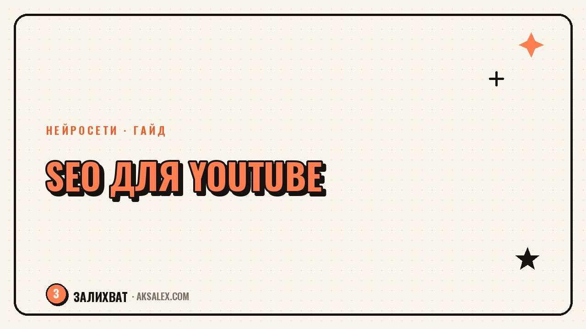

SEO для YouTube: как нейросети продвигают видео

YouTube - это поисковик, а не только лента рекомендаций, и работает он по тем же принципам, что и обычный поиск: ищет совпадения в заголовке, описании, субтитрах и реакции зрителей. Если видео не находят через поиск, часто дело не в качестве ролика, а в том, что метаданные под него не собраны. Нейросети закрывают самую долгую часть этой работы - подбор ключей и черновики текстов - и оставляют тебе финальную проверку и правки под голос канала.
Как устроен поиск YouTube и при чём тут SEO
YouTube считывает текст видео - заголовок, описание, теги, субтитры - и сопоставляет его с тем, что вводит зритель в поиске. После показа алгоритм смотрит на поведение: досматривают ли ролик, кликают ли по нему из выдачи. SEO отвечает за первую часть - чтобы видео вообще попало в выдачу по нужному запросу, а дальше в игру вступает сам контент.
Без правильных ключей даже отличный ролик может показываться только подписчикам через ленту рекомендаций и не доходить до новых зрителей через поиск.
Что нейросети умеют делать для SEO видео
| Задача | Как помогает нейросеть | Что проверить самому |
|---|---|---|
| Подбор ключевых запросов | Собирает список фраз по теме ролика | Отсеять то, что не отражает суть видео |
| Черновик заголовка | Предлагает варианты с ключом в начале | Сохранить честность, не преувеличивать |
| Описание под видео | Пишет структурированный текст с ключами | Добавить ссылки и таймкоды вручную |
| Субтитры и транскрипт | Распознаёт речь и оформляет текстом | Проверить термины и имена собственные |
| Теги видео | Предлагает список тегов по теме | Убрать нерелевантные и дублирующие теги |
Как собрать SEO-пакет для ролика шаг за шагом
1. Ключевой запрос - раньше сценария, а не после
Прежде чем снимать, попроси нейросеть собрать список запросов по теме и посмотри, какие формулировки использует твоя аудитория. Так заголовок и структура ролика сразу отвечают на реальный вопрос, а не на то, как тема звучит у тебя в голове.
2. Заголовок и описание
Ключевой запрос должен быть ближе к началу заголовка - так его видно и в поиске, и на превью. В описании нейросеть может собрать структуру: первые два предложения с ключом, дальше - подробности и таймкоды.
- Собери список запросов по теме до съёмки, а не после монтажа
- Вставь главный ключ в первые слова заголовка
- Начни описание с двух предложений, которые отвечают на запрос
- Добавь субтитры - они дают поиску полный текст ролика
- Проверь теги вручную, убери всё, что не относится к теме
Поиск YouTube ищет по тексту, а рекомендует по поведению зрителей. SEO открывает дверь в выдачу, а досматривают ролик уже из-за содержания.
Частые ошибки SEO с нейросетями на YouTube
Первая ошибка - копировать заголовок и описание, которые сгенерировала нейросеть, без адаптации под голос канала. Такие тексты часто звучат обезличенно и не совпадают с тем, как ты обычно обращаешься к зрителям, а это снижает узнаваемость.
Вторая - переспам ключами в описании и тегах. Алгоритм YouTube определяет накрутку и может понизить видео в выдаче вместо того, чтобы поднять. Ключи должны звучать естественно, как в обычной речи.
Субтитры как отдельный инструмент SEO
Субтитры - это полный текст ролика, который поиск читает целиком, а не только заголовок и описание. Автоматическая расшифровка через нейросеть занимает пару минут, но её стоит проверить: ошибки в терминах и именах могут исказить смысл и сбить с толку поиск и зрителей с плохим слухом.
Субтитры также открывают доступ к видео зрителям, которые смотрят без звука - а таких на мобильных устройствах много, и это напрямую влияет на досматриваемость ролика.
Частые вопросы
Влияют ли теги на YouTube так же сильно, как раньше?
Их вес в ранжировании снизился по сравнению с заголовком, описанием и субтитрами, но они всё ещё помогают алгоритму понять контекст видео, особенно при похожих названиях у разных каналов.
Можно ли полностью доверить нейросети написание описания под видео?
Черновик - да, но финальный текст стоит адаптировать под голос канала и добавить ссылки, таймкоды и призывы, которые нейросеть не знает без твоей подсказки.
Как нейросеть помогает выбрать между несколькими вариантами заголовка?
Она может оценить, какой вариант ближе к формулировкам реальных поисковых запросов, но финальное решение стоит принимать с учётом того, что ты знаешь про свою аудиторию.
Нужны ли субтитры, если видео и так хорошо набирает просмотры?
Да, субтитры расширяют охват: их читает поиск, ими пользуются зрители без звука и с нарушениями слуха. Это дополнительный канал роста, даже если базовые показатели уже неплохие.
Как часто стоит обновлять SEO уже опубликованных видео?
Если видео стабильно набирает просмотры, лучше не трогать метаданные без причины. Обновлять стоит ролики, которые явно недобирают охват при хорошем качестве контента.
а не вручную